The Jobmate 3980 was developed for the Canadian market and sold alongside the very similar Canadian model 79-005. Like the 79-004 that was sold alongside the 79-001 in the U.S. market, the Jobmate was an attempt by Black & Decker to bring back the expensive-to-make aluminum H-frame by pairing it with other exclusive features and charging a higher price. The Jobmate came on the Canadian market in late 1978, about a year after the 79-001 with aluminum-H-frame was discontinued in Canada and replaced with the steel-H-frame Workmate 79-005. The Jobmate appears to have been discontinued in 1980. The Jobmate was made at the Brockville factory and shares most of its parts with the 79-001, 79-004, and 79-005.
(The Jobmate was also marketed in the U.S. for a short time as a professional tool by Black & Decker's Industrial/Construction division at the same time that the Workmate 79-001 and 79-004 were being sold as do-it-yourself tools by their Consumer Products division.)
Comparing the Jobmate with the Workmate 79-004 shows that Black & Decker chose a slightly different mix of enhanced features for the two of them. The Jobmate boasts of an aluminum H-frame, a power strip, steel vise cladding, a plastic parts tray, and a pair of bundled Gripmate clamps. It does not include the four adjustable feet on the legs found on the 79-004. And, finally, I would guess the name change to Jobmate may have been for the same reason--to perhaps elevate it above the DIY-market Workmate. The 3980 was the only model offered under the Jobmate name.
Its truly distinctive feature is the removable steel vise cladding, providing an "extremely rugged work surface". The cladding is held with a mounting knob threaded into the cladding from below through the center hole in the jaw. The top surface has "Vise Cladding" engraved in large letters, in case you forgot why you had those two huge pieces of metal lying around. Also engraved is a measuring scale in inches and centimeters. There are eight holes allowing for the use of swivel pegs or Gripmate clamps when the cladding is installed. Similar aluminum cladding was sold in the UK and Europe as the Workmate accessory WM120.
A second difference from all other Workmates is that the Jobmate included a tool tray made of plastic that mounts with three screws to either the front or rear jaw. This tray has been missing on most of the Jobmates I've seen. A pair of Gripmate clamps was also bundled with the Jobmate, as was a power strip.
Other than those features, the Jobmate 3980 has characteristics of the Workmate 79-001 Types 4 6, and 7, which were being produced during the same time period. The Jobmate was sold as a Type 1, Type 2, and Type 3. The paper label adhered to the wooden jaws reveals which country an individual Jobmate was sold in. For those sold in Canada, the lower section of the label has English on the left side and French on the right side. Those sold in the U.S. have only English on the paper label. The label also has a part number, not found on the label of any other Workmate from this period. Based on a small number of Jobmates I have seen with labels, I can say that the Canadian Type 1 has part number 97261, the U.S. Type 1 has part number 976511, the U.S. Type 2 has part number 976511-01, and the U.S. Type 3 has part number 976511-04.
All Jobmates have the double-layer top of plywood or MDF. The Jobmate 3980 Type 1 is close in components to the 79-001 Type 4. It has the two-piece catch for the folded position, either white or black H-frame bushings, steel top-release levers, screw-in feet for sawhorse height, and spring steel clips for the folding legs. The Jobmate 3980 Type 2 is close to the 79-001 Type 6. It has the one-piece catch for the folded position, black H-frame bushings, either plastic or steel top-release levers, bumper feet for sawhorse height, and friction hinges for the folding legs. The Jobmate 3980 Type 3 has steel top-release levers and textured plastic vise handles like the 79-001 Type 7.
(Note that the Jobmate name returned to the Canadian market decades later, as a house brand of tools from the retailer Canadian Tire. I'm sure there is no connection with Black & Decker's Jobmate.)
Black & Decker Jobmate 3980
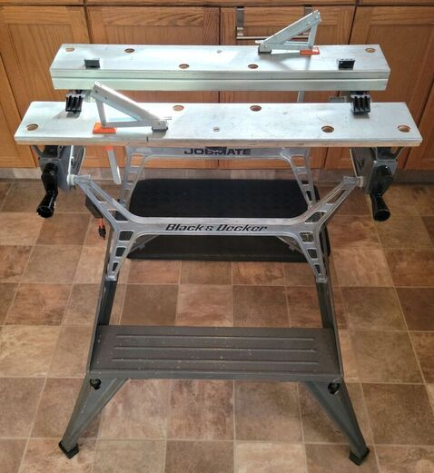
Click on any image below to open the gallery of full-screen images.

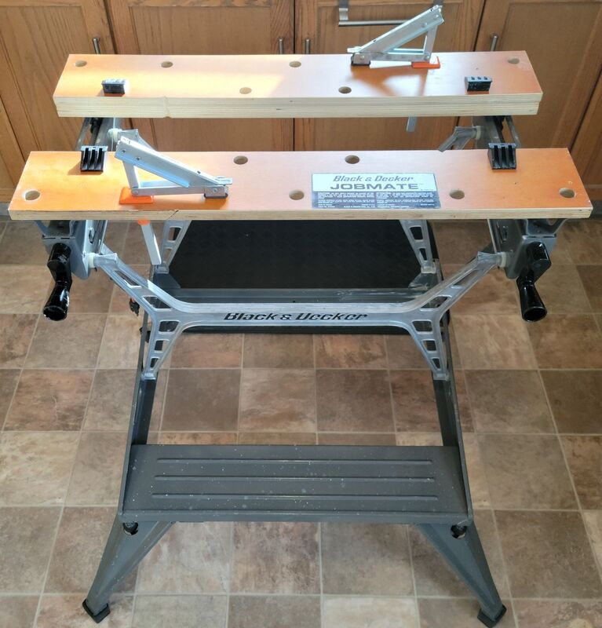

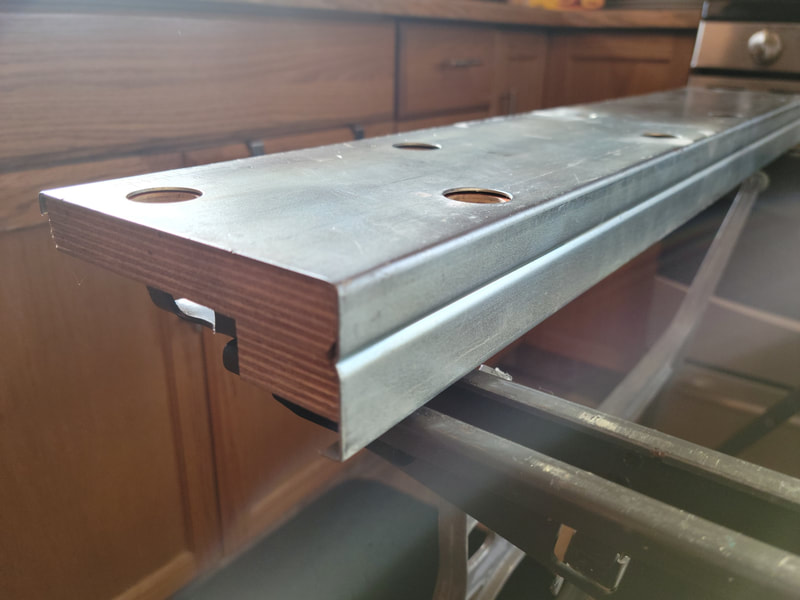

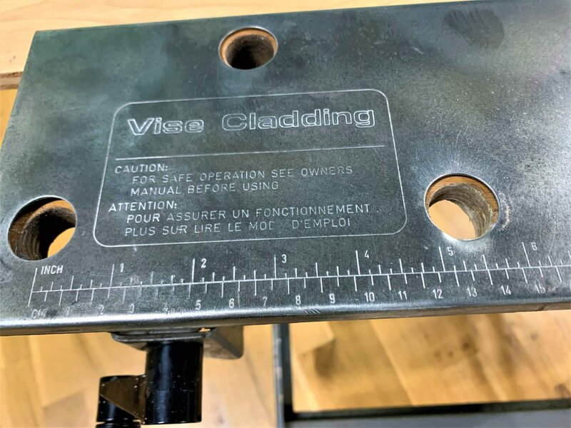

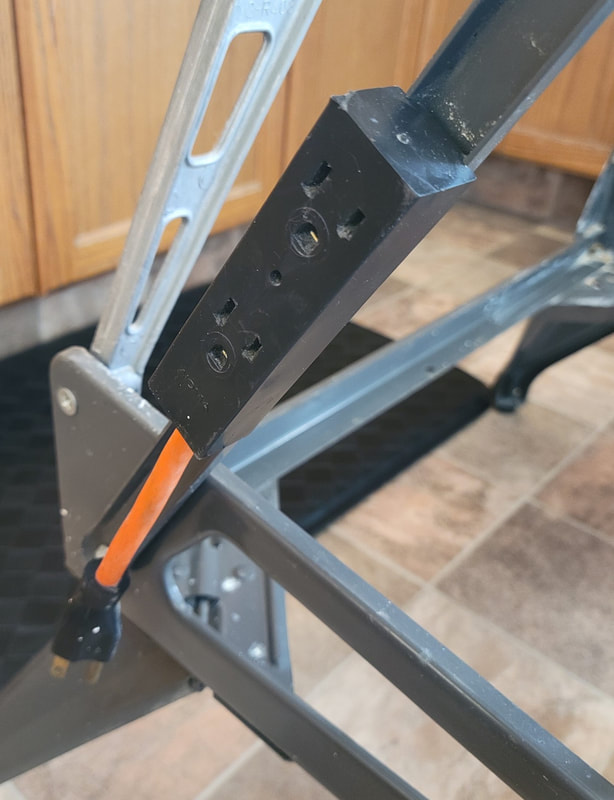

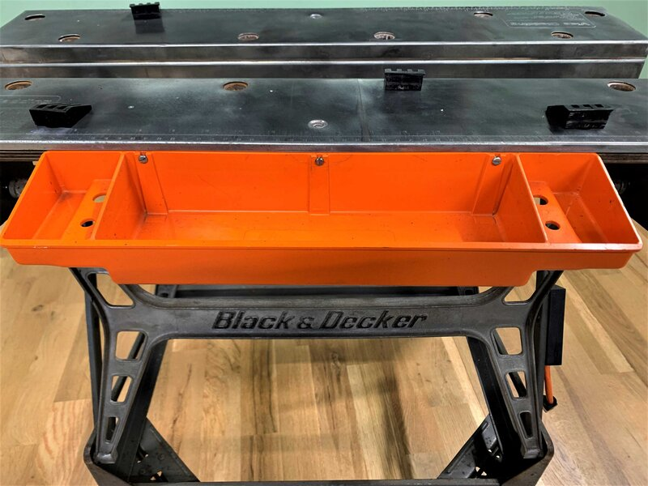

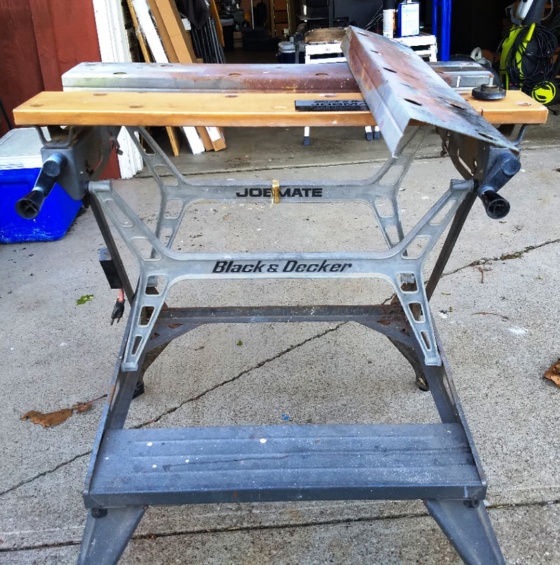

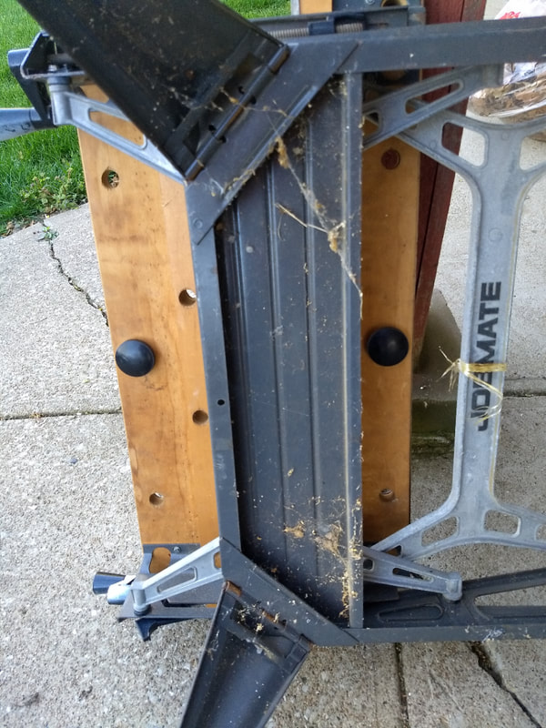

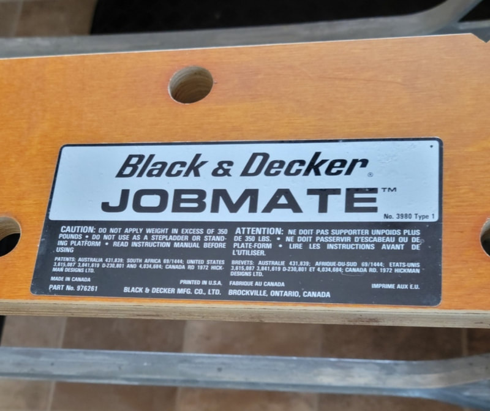

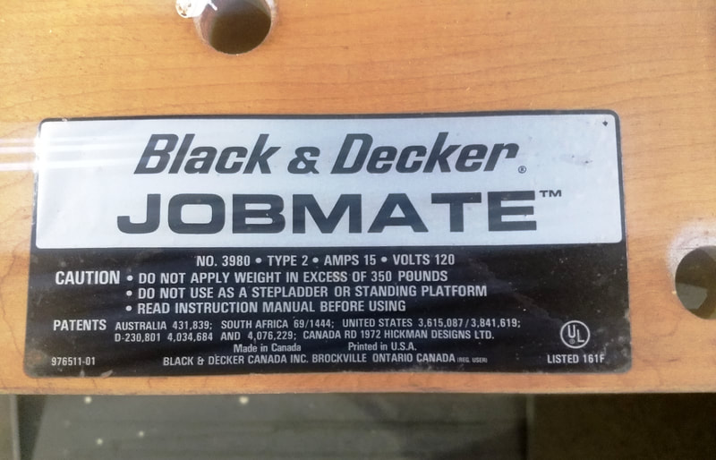

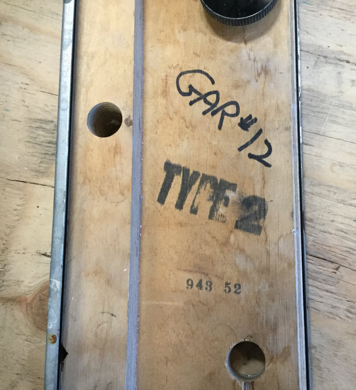